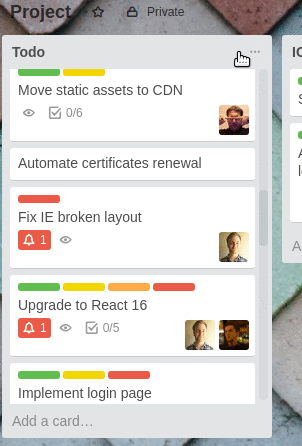
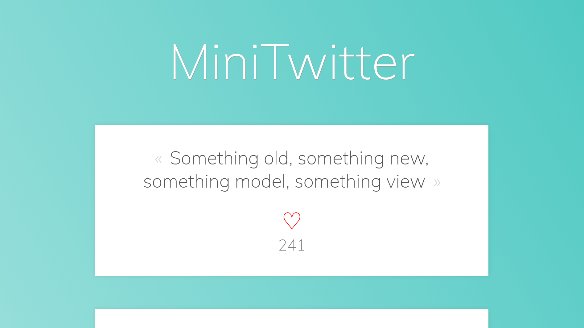

GraphQL and Apollo client


ReactJS Lunch @ CHILI lab, EPFL
May 29th, 2017
About myself
- James Nolan
- "Full stack" software engineer @ coteries • Lab
- JavaScript, React
- Twitter @CoffeeHeadJim
- j.nolan@otherwise.ch
History
- 2012, Facebook redesigns app after HTML5 fiasco
- "What would an ideal API look like?"
- Since then, GraphQL powers the Android and iOS Facebook apps
- 300 billion+ requests per day at Facebook
- 2015, open sourced
Who uses it?


The problem with REST
Overfetching

⟶ GET board/123/cards
⟵ 200 OK [{
"content": "Move static assets to CDN",
"collaborators": [{...}],
"labels": [{...}, {...}],
"board": {...},
"checklists": [{...}, {...}],
"createdAt": {...},
"updatedAt": {...},
"expiresAt": {...},
"dueDate": {...},
"author": {...},
"attachments": [{...}, {...}],
"activity": [{...}, {...}],
"webhooks": [{...}, {...}],
]}
Extra roundtrips
⟶ GET board/123/cards
⟵ 200 OK [{
"content": "Move static assets to CDN",
"collaboratorsIds": [1308]
]}
⟶ GET collaborator/1308
⟵ 200 OK [{
"name": "Manu",
"avatar": "https://..."
]}
REST's solutions
- Explicit fields
- Subtrees
- More endpoints
⟶ GET board/123/cards?include=content,labels&expand=collaborators
⟵ 200 OK [{
"content": "Move static assets to CDN",
"labelsIds": [99, 101],
"collaborators": [{...}, {...}]
]}
⟶ GET board/123/cards
⟵ 200 OK [{
...
"collaborators": [{
"name": "Manu",
"avatar": "https://...",
"type": "premium",
"cards": [...],
}],
...
]}
Hard do get right
- How to enumerate fields in subtrees?
- When is a subtree more relevant than a reference (ID)?
- Should the backend developers maintain endpoints for each frontend view?
- How to keep a reasonable number of endpoints?
- Why would we let the server decide what data to return?
What is GraphQL?
- Defines a data shape
- Hierarchical
- Strongly typed
- Protocol, not storage
- Introspective
- Lets clients specify their own data needs
- Lets the server expose its own capabilities
Queries
Mutations
Subscriptions
Schema and types
#
# Welcome to the MiniTwitter GraphQL API. It was built by James Nolan as a
# demonstration for the May 29th React Lunch about GrapHQL and Apollo client
#
# Users can write tweets. Users have IDs that have the format of a twitter handle
type User {
# The ID of the user. It is in the Twitter handle format, such as @johnDoe
id: ID
# The name of the user. Usually first name + last name
name: String
# The list of users that follow that user
followers: [User]
# The list of tweets the user wrote
tweets(limit: Int): [Tweet]
}
# A tweet typically consists in a small text and the number of people that liked it
type Tweet {
# The ID of a tweet. Typically a unique integer
id: ID
# the actual content of the tweet. Max 144 in length!
content: String
# the number of times the tweet has been liked
likes: Int
# the user that wrote the tweet
author: User
}
# Queries allows the client to retrieve data from the API. GraphQL queries can be
# compared to GET requests in REST APIs
type Query {
# Returns a list of all the tweets. You can optionally pass a limit parameter to
# specify the max number of tweets the API can return
tweets(limit: Int): [Tweet]
# Returns a single tweet by its ID
tweet(id: ID!): Tweet
}
# Mutations are similar to Queries, except that they will probably change something
# in the data. GraphQL Mutations can be compared to POST requests in REST APIs
type Mutation {
# Updates the "like" count of a given tweet. You should pass the ID of the tweet
# to update
likeTweet(id: ID!): Tweet
}
`
(view in editor)
Scalar types
Int: a 32-bit signed integerFloat: A signed double-precision floating-point valueString: A UTF‐8 character sequenceBoolean: true or falseID: A unique identifier (alias of String)- Custom scalars
Enums
enum CoffeeSize {
Short
Tall
Grande
Venti
}
mutation ($type: String, $size: CoffeeSize) {
orderCoffee (type: $type, size: $size) {
timeToWait
}
}
# variables
{ type: "Americano", CoffeeSize: "Short" }
Lists and null values
type User {
id: ID!
name: String!
followers: [User!]
}
Other constructs
- Interfaces
- Unions
- Input types
- Fragments
- Directives
Apollo
Connecting a simple UI to a GraphQL server
Step 0: run backend
git clone git@github.com:j-nolan/react-lunch-graphql.git
cd react-lunch-graphql
cd server && npm install && npm start
Step 1: A pure UI
cd example-apps/01-pure-ui && npm install && npm start

Step 2: Query Tweet
cd example-apps/02-query-tweet && npm install && npm start
Step 3: Mutate tweet
cd example-apps/03-mutate-tweet && npm install && npm start
Step 4: Optimistic Like Tweet
cd example-apps/04-mutate-tweet-optimistic && npm install && npm start
Step 5: Polling
cd example-apps/05-polling && npm install && npm start
(Step 6: Subscriptions)
(Step 7: Pagination)
Mini case studies
Manual store update
- Apollo updates its store automatically
- Uses normalization: maps {typename, id} -> object
- Doesn't handle adding new objects to lists
Solution 1: refetchQueries
export default graphql(createTweetMutation, {
props: ({ mutate }) => ({
createTweet: (content, authorId) => mutate({
variables: { content, authorId },
refetchQueries: [{
query: listTweetsQuery
}],
})
})
})
Solution 2: update
export default graphql(createTweetMutation, {
props: ({ mutate }) => ({
createTweet: (content, authorId) => mutate({
variables: { content, authorId },
update: (store, { data: { createTweet } }) => {
const data = store.readQuery({ query: listTweets });
data.tweets.push(createTweet);
store.writeQuery({ query: listTweets, data });
},
})
})
})
Delayed queries
<App>
graphql(closestTweets)(<Map />)
</App>
- Query might depend on data that we can only retrieve asynchronously
- In this case,
Geolocation.getCurrentPosition()
Solution 1
<App>
withApollo(<Map />)
</App>
/* Map.js */
export default class Map extends Component {
/* Get location, then manually trigger query, then render query result */
}
- Solution 1: take over and make the query manually
- Requires manually managing
loadinganderrorstates - Mixes stateful logic inside Map UI component
Solution 2
<App>
withLocation(graphql(closestTweets)(<Map />))
</App>
withLocationHigher Order Component (HOC)- Delays rendering until location is resolved
- Reusable
Offline first
- Offline mutations? Don't use Apollo (yet)
- Offline queries? Use redux-persist
Tools
Graphiql
- An browser GraphQL API explorer
- Queries, mutation, subscriptions, variables, validation...
- Dynamic documentation
- Widely adopted
Lokka
- Basic JS GraphQL client for browser / Node.js / React Native
- Alternative to Apollo
- Doesn't support variables
Apollo dev tools
- Bulit-in graphiql
- Easily inspect stores
graphql-for-vscode
Launchpad
- In-browser GraphQL server playground
- Instantly create public schemas
graph.cool
- GraphQL Backend as a service
- Organize the GraphQL Europe conference
Thanks
Sources
- Strong typing from the server to the UI with GraphQL, Martijn Walraven @ UIKonf 2017
- Who's using GraphQL?
- GraphQL, a data query language, Lee Byron